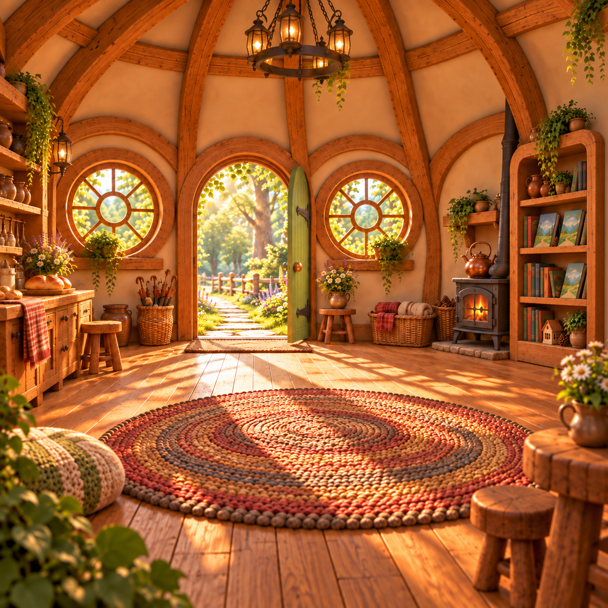

A · September 22 — user-preferred visual benchmark
V3 panorama + four perspective repairs: front, rear, ceiling and floor.
Loading all five A images…
Earlier review found a faint rear-floor tonal join.
One bounded wall-seam repair
The plan is to repair the wall break in an ordinary perspective view, then blend that view back into one panorama. Ceiling and floor poles, and the existing stove/bathroom mistakes, are outside this repair.
These are the two strongest earlier illustrated results, with their complete repair layers active. They use earlier room layouts and retain minor joins. Compare their actual rear, ceiling and floor views with the newer experiment.
Drag either scene to synchronize both. These inspection controls reach ±89°; the historical viewer stopped at ±65°, so this is a stricter pole inspection.
V3 panorama + four perspective repairs: front, rear, ceiling and floor.
Loading all five A images…
Earlier review found a faint rear-floor tonal join.
V2 illustrated Blender panorama + one rear perspective repair.
Loading both F images…
Earlier review found a faint rear-rug texture join and fine pole-texture convergence.

A Blender panorama supplied the room structure, while this finished room supplied its visual detail. One selected panorama was followed by four perspective repairs: front, rear, ceiling and floor. The viewer combines those images at their recorded camera positions. It samples the 1774×887 base and four 1254×1254 repair images live, retaining their separate texture resolution. The newer wrap trial instead bakes its repair into one 1774×887 panorama and then 512-pixel cube faces; this is a pipeline difference, not proof of a single cause for the quality gap.
The recorded artwork interval was 20m52s (about 21 minutes), from the decision to try 360° viewing to the last repair result on September 22. That excludes viewer implementation and verification. The final Blender guide render took 57 seconds; the broader A/B comparison and QA reached completion after about 45 minutes, including the separate B experiment. Including two earlier rejected panoramas, the study used seven image calls: five retained images. Their observed request intervals totaled about 4m46s, counting the four repairs as one concurrent batch—not four sequential waits.
Read the verified decision log, exact prompts and timing
This is the user’s preferred visual benchmark, not a selection for the current house geometry.
These demonstrate a more coherent earlier experience. Neither is being labelled a flawless sphere or the current three-room house.
The native experiment’s panorama is the source. A deterministic camera projection centers its left/right wrap seam at yaw 180°, pitch 0°, with a 110° field of view.


The repaired view is reprojected into the original sphere with a soft-edged mask. Outside that mask the original panorama pixels remain unchanged. This conversion does not generate new artwork.


Drag either image to turn both. Pinch, scroll or use the keyboard arrows and + / −. Both views use the same camera.
Loading original room…
Loading repair…
This pass addresses the straight wall seam only. The poles and earlier room-identity changes remain visible and are not claimed as fixed. The current connected tour is unchanged.